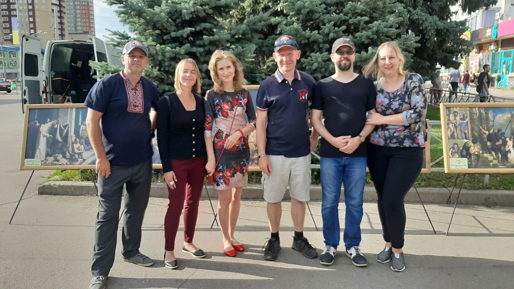

Механики Света в летних лагерях Июль 2020

С 17 по 26 июля нашу команду приглашали послужить в лагерях на Азовском море: Бердянск, Новоконстантиновка, Ботиево. Нашей задачей было организовать особенный вечер в лагере,когда дети могли бы здорово повеселиться со смыслом, увидеть научные эксперименты с жидким азотом, электричеством и огнем. Получить вызов следовать за Христом и быть светом в этом мире. В каждом лагере нас встречали по-особенному, даже скептики через 20 минут забывали все и становились нашими друзьями, угощали нас шаурмой и мороженным после перформанса. Конечно были и происшествия. Вовремя последнего представления около 21:30 пропало электричество, но Слава и Саша здорово справились с этой ситуацией, дети сидели в темноте и внимательно слушали Механиков Света, пока электрики восстанавливали свет. В завершении вечера я проводил опыт с электрической лампой без колбы, которая незабываемо ярко и живо светится в банке с жидким азотом. Мое послание к этому эксперименту было из Ин 8:12: "... Иисус сказал: Я свет миру; кто последует за Мною, тот не будет ходить во тьме, но будет иметь свет жизни." Я призывал детей: "Следуйте за Христом! Будьте светом в этом мире!" Саша объяснял как принять Христа и проводил молитву. Трудно в таком шумном формате определить, кто принял Христа, но мы верим, что плод есть, потому что проповедовалось Слово Божие.
ВМЕСТЕ ЗДОРОВО ПЕРЕЖИТЬ ЛЮБЫЕ ПРИКЛЮЧЕНИЯ

Для нашей команды настоящим приключением и благословением от Бога была возможность провести евангелизационные представления в 5 лагерях перед аудиторией около 400 человек. Дети и взрослые с восторгом принимали нас, а мы наслаждались служением и отдыхом. Это также было хорошим временем развития отношений в нашей команде. Ярослав и Вениамин, наши новые парни гармонично вписались в команду. С собой в поездку я брал Тимофея и Степана. За семь дней вместе мы успели много пообщаться, играли в настольные игры с отдыхавшими в лагере детьми, готовили пищу, купались в море, путешествовали и попадали в хорошие приключения. Бог дал пережить радость общения и радость от служения Ему.
РАДОСТЬ БЛАГОВЕСТИЯ ИЗВЕСТНА КАЖДОМУ В НАШЕЙ КОМАНДЕ
Наша церковь по воскресеньям после служения начала проводить уличное благовестие с картинами. Обычно я зазываю людей словами: "Наша выставка называется "Жизнь Иисуса Христа глазами великих художников". Каждый шедевр - это воплощенная история из жизни Иисуса описанная в Евангелии. Вы сейчас, кстати, рассматриваете картину МЕТСЮ ГАБРИЕЛЯ «ГОЛГОФА» 1665г. Как вы думаете, почему Иисус Христос, Который совершал чудеса, исцелял людей, воскрешал мёртвых, остановил бурю на море, добровольно пошел на крест?" Собеседник начинает отвечать и это хорошая возможность вместе с ним поразмышлять о том, что значит фраза "Иисус умер за грехи наши". В прошлое воскресенье, я заметил одного молодого парня с ребёнком, который пристально рассматривал картину "Голгофа". Я подошёл, поздоровался и сказал: "Наверное вы любите картины? У вас на руке татуировка. Что она означает?" Анатолий, так звали тридцати летнего парня, рассказал о том, что его пятилетний сын болел раком крови и провел в больнице целый год. Поэтому он сделал себе татуировку, на которой его малыш изображён в его ладони. Этот парень оказался неверующим, но он внимательно слушал о том, как Небесный Отец послал Сына умереть за наши грехи на кресте. Я был так рад, что у меня была возможность поговорить с ним о надежде, о Спасителе, о Том, Кто исцеляет тело и душу. Каждый из нашей небольшой церковной команды знает эту особенную радость от благовестия обещанную Иисусом в Мат 28:18-20: "Иисус сказал им: дана Мне всякая власть на небе и на земле. Итак идите, научите все народы, крестя их во имя Отца и Сына и Святого Духа, уча их соблюдать все, что Я повелел вам; и се, Я с вами во все дни до скончания века. Аминь."